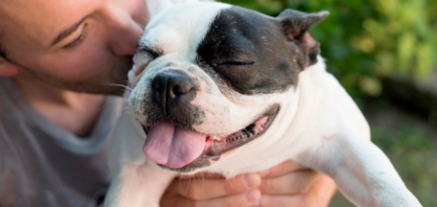

Dog
The dog or domestic dog is a domesticated descendant of the wolf, characterized by an upturning tail. The dog derived from an ancient, extinct wolf, and the modern grey wolf is the dog's nearest living relative.
Care
Look after and provide for the needs of.
